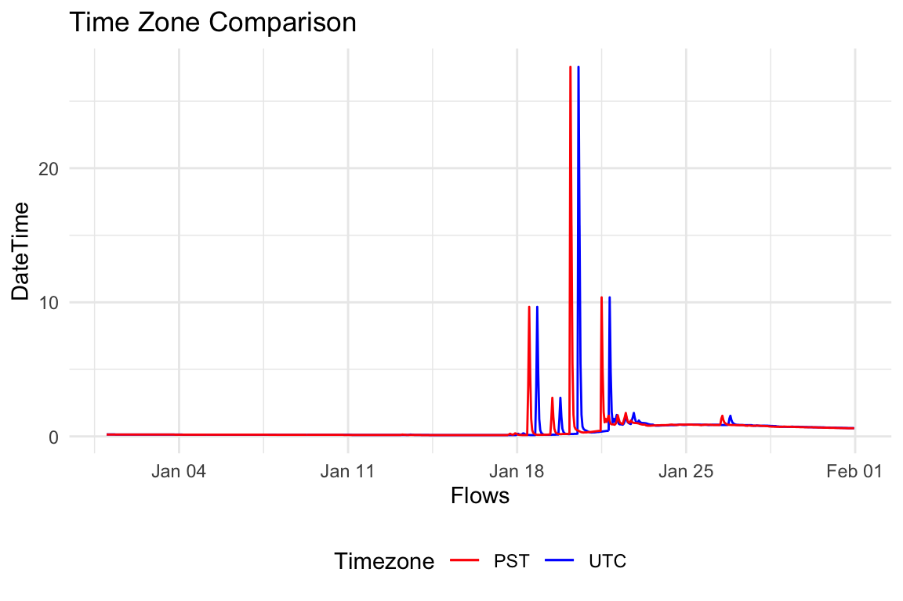
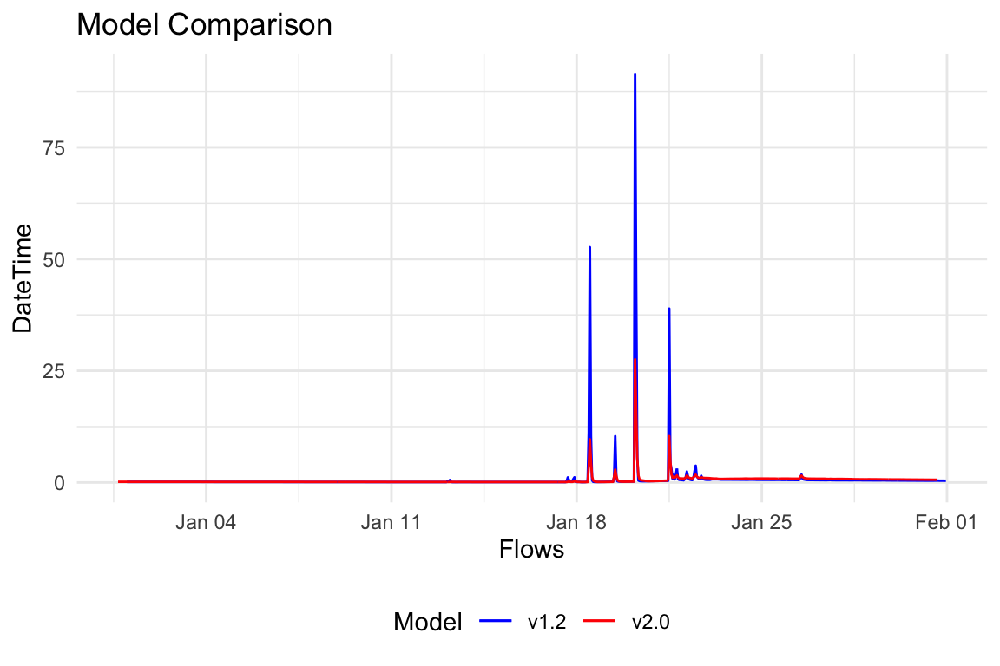
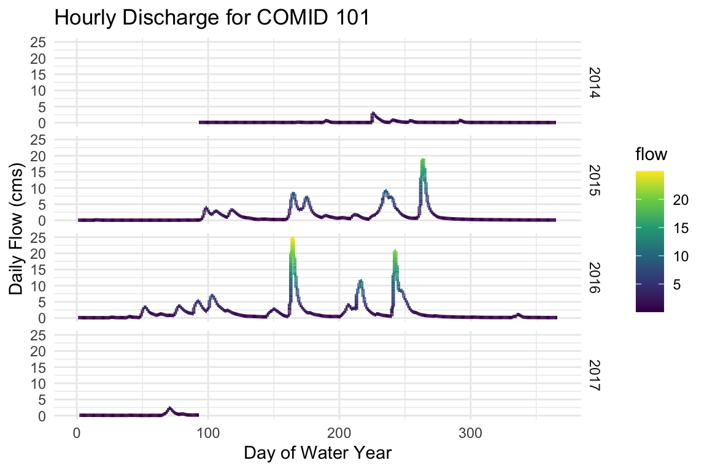

As part of a collaborative research effort, the multi-decadal reanalysis products from the NOAA National Water Model (versions 1.2 and 2.0) have been reformatted and exposed through CUAHSI at the RENCI computing facility. This document outlines how someone can interact with the interface.
TL;DR
This package allows you to rapidly extract streamflow data from the reanalysis National Water Model products by NHD Catchment Identifier or USGS NWIS stream gage:
library(nwmHistoric) flows = readNWMdata(siteNumber = 11120000) flows = readNWMdata(comid = c(101,17595383))
Extracting data by location
Reanalysis data can be accessed with the readNWMdata function. The API allows users to specify forecast location by either NHD Catchment Identifier(s) (COMID), or as an NWIS gage ID(s). Examples for each follow:
NHD Catchment Identifier (COMID)
NWM reanalysis data can be extracted by NHD Catchment Identifier(s). The following code pulls the complete reanalysis data archive for COMID 17595383, a NHD reach near Goleta, California.
flows = readNWMdata(comid = 17595383)
#> model comid time flow
#> 1 NWM2 17595383 1993-01-01 00:00:00 0.21
#> 2 NWM2 17595383 1993-01-01 01:00:00 0.21
#> 3 NWM2 17595383 1993-01-01 02:00:00 0.21
#> 4 NWM2 17595383 1993-01-01 03:00:00 0.21
#> 5 NWM2 17595383 1993-01-01 04:00:00 0.21
#> 6 NWM2 17595383 1993-01-01 05:00:00 0.21USGS NWIS Site Number
Alternatively, data can be extracted using USGS NWIS sit number(s).
flows = readNWMdata(siteNumber = '11120000') head(flows) #> model comid time flow siteNumber #> 1 NWM2 17595429 1993-01-01 00:00:00 0.41 11120000 #> 2 NWM2 17595429 1993-01-01 01:00:00 0.41 11120000 #> 3 NWM2 17595429 1993-01-01 02:00:00 0.41 11120000 #> 4 NWM2 17595429 1993-01-01 03:00:00 0.41 11120000 #> 5 NWM2 17595429 1993-01-01 04:00:00 0.42 11120000 #> 6 NWM2 17595429 1993-01-01 05:00:00 0.42 11120000
Date Range
By default, the API extracts the complete flow record for each input location. This range can subset by providing a startDate and endDate in the form of (“YYYY-MM-DD”). Below is an example of getting the flow records for January 2010 at the same COMID as above:
flows_utc = readNWMdata(comid = 17595383, startDate = "2010-01-01", endDate = "2010-01-31") # Check time diminsions min(flows_utc$time) #> [1] "2010-01-01 UTC" max(flows_utc$time) #> [1] "2010-01-31 23:00:00 UTC" tz(flows_utc$time) #> [1] "UTC"
Time-zones
NWM output is recorded as a dateTime in UTC. To request data in a different time zone users can request a timezone to return data for.
In this example we are looking for the October 2010 flows in Goleta, California so we request the data in US/Pacific time.
flows_pst = readNWMdata(comid = 17595383, startDate = "2010-01-01", endDate = "2010-01-31", tz = "US/Pacific") # Check time diminsions min(flows_pst$time) #> [1] "2010-01-01 PST" max(flows_pst$time) #> [1] "2010-01-31 23:00:00 PST" tz(flows_pst$time) #> [1] "US/Pacific" # Ensure UTC and PST extracts are equal length nrow(flows_pst) == nrow(flows_utc) #> [1] TRUE
Finally, we can plot the UTC return against the PST return:
ggplot() + geom_line(data = flows_utc, aes(x = time, y = flow, color = "UTC")) + geom_line(data = flows_pst, aes(x = flows_utc$time, y = flow, color = "PST")) + theme_minimal() + scale_colour_manual(values = c("UTC" = "blue","PST" = "red"), guide = guide_legend(override.aes = list(linetype = c("solid", "solid"), shape = c(NA,NA))))+ labs(x = 'Flows', y = "DateTime", title = "Time Zone Comparison", color = "Timezone") + theme(legend.position = "bottom")

Model Version
The reanalysis product for versions 1.2 and 2.0 of the reanalysis product are available. By default the API extracts data from version 2.0, but data from 1.2 can be requested using the version parameter.
flows12 = readNWMdata(comid = 17595383, startDate = "2010-01-01", endDate = "2010-01-31", tz = "US/Pacific", version = 1.2)
Finally lets plot the v1.2 vs v2.0 data to see what differences these two models exhibit at COMID 101:
ggplot() + geom_line(data = flows12, aes(x = time, y = flow, color = "v1.2")) + geom_line(data = flows_utc, aes(x = time, y = flow, color = "v2.0")) + theme_minimal() + scale_colour_manual(values = c("v1.2" = "blue","v2.0" = "red"), guide = guide_legend( override.aes = list(linetype = c("solid", "solid"), shape = c(NA,NA))))+ labs(x = 'Flows', y = "DateTime", title = "Model Comparison", color = "Model") + theme(legend.position = "bottom")

Year-Month-Day-Hour Visualization
Being able to extract hourly data has some advantages and cool opportunities for visualizing data. Lets extract some data to play with:
vizflow = readNWMdata(comid = 101, startDate = "2014-01-01", endDate = '2016-12-31')
Split-time
For most plotting efforts we will want to organize time aggregates of the raw data (e.g. by year, by-month…). The nwmHistoric package provides a function for splitting the hourly dateTime objects of a nwm data.frame into it temporal components. In addition to the basic Year, Month,Day, and Hour, the season, water year, and Day-of-Water Year (DOWY) are added:
st = split_time(vizflow) head(st) #> model comid time flow year month day hour season wy #> 1 NWM2 101 2014-01-01 00:00:00 0.09999999 2014 1 1 0 Winter 2014 #> 2 NWM2 101 2014-01-01 01:00:00 0.09999999 2014 1 1 1 Winter 2014 #> 3 NWM2 101 2014-01-01 02:00:00 0.09999999 2014 1 1 2 Winter 2014 #> 4 NWM2 101 2014-01-01 03:00:00 0.09999999 2014 1 1 3 Winter 2014 #> 5 NWM2 101 2014-01-01 04:00:00 0.09999999 2014 1 1 4 Winter 2014 #> 6 NWM2 101 2014-01-01 05:00:00 0.09999999 2014 1 1 5 Winter 2014 #> julian DOWY #> 1 1 93 #> 2 1 93 #> 3 1 93 #> 4 1 93 #> 5 1 93 #> 6 1 93
Using the time attributes of the “split” time elements we can plot the hourly flow records by water-year:
ggplot(data=st,) + geom_line( aes(x=DOWY, y=flow, color = flow), size = 1) + scale_color_viridis_c() + facet_grid(wy~.) + labs(y="Daily Flow (cms)", x= "Day of Water Year", title="Hourly Discharge for COMID 101") + theme_minimal()

Alternatively we can plot the hourly streamflow conditions as a heat-map grouped by day, month and year. (Adopted from here)
ggplot(st,aes(day,hour,fill=flow))+ geom_tile(color= "transparent",size=0.1) + scale_fill_viridis(name="Hourly Flows cms",option ="C", alpha = .8) + facet_grid(year~month) + scale_y_continuous(trans = "reverse", breaks = unique(st$hour)) + scale_x_continuous(breaks =c(1,10,20,31)) + theme_minimal(base_size = 8) + labs(title= paste("Hourly Flows - COMID",st$comid[1]), x="Day", y="Hour") + theme(legend.position = "bottom")+ theme(plot.title=element_text(size = 14))+ theme(axis.text.y=element_text(size=6)) + theme(strip.background = element_rect(colour="white"))+ theme(plot.title=element_text(hjust=0))+ theme(axis.ticks=element_blank())+ theme(axis.text=element_text(size=7))+ theme(legend.title=element_text(size=8))+ theme(legend.text=element_text(size=6))

In section 2 we will look at how we can automate COMID and USGS NWIS discovery. In section three we will look at some techniques to capitalize of the split_time time elements using the aggregation_* family of functions.